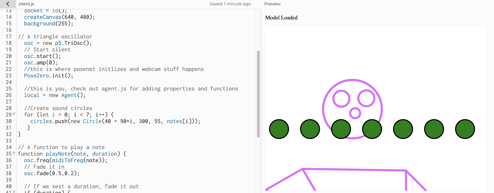
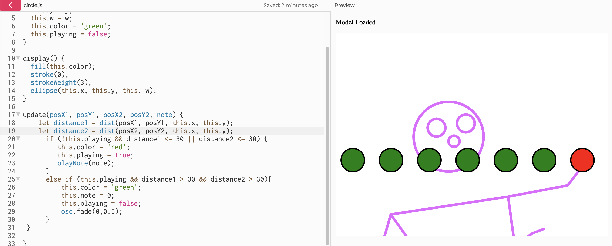
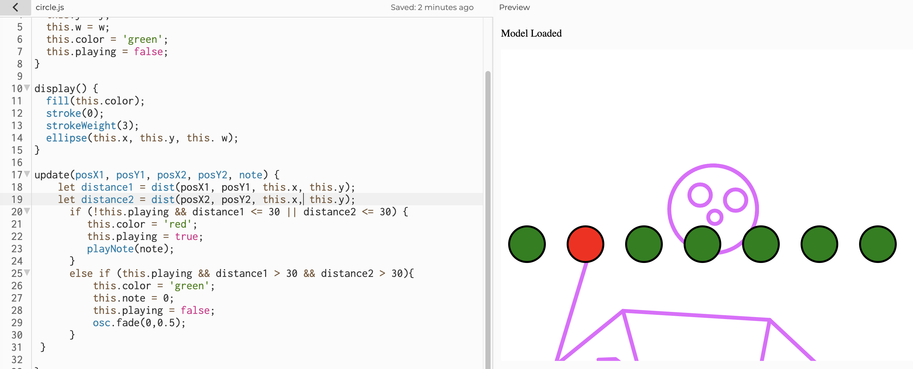
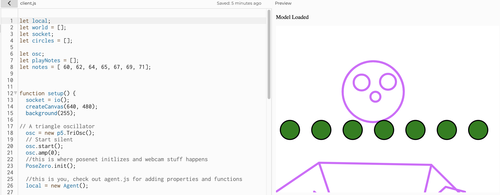

In this class, we will build a high-fidelity prototype that emphasizes "look and feel". The goal of my project is to create a person who can play music from various circles with PoseNet.
Let's start by creating 7 circles to represent 7 notes.
Played with the circles with the right wrist, a red circle will appear if it is touched.
Played with circles on my left wrist.
Adding notes sounds to different circles.
Check it out in P5js 